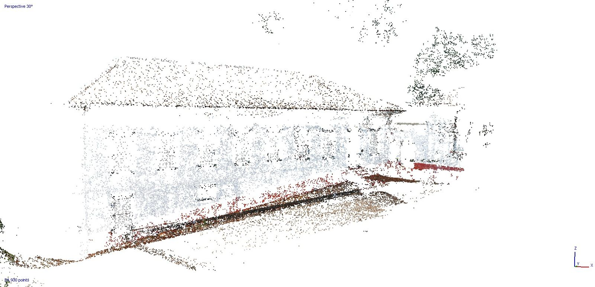
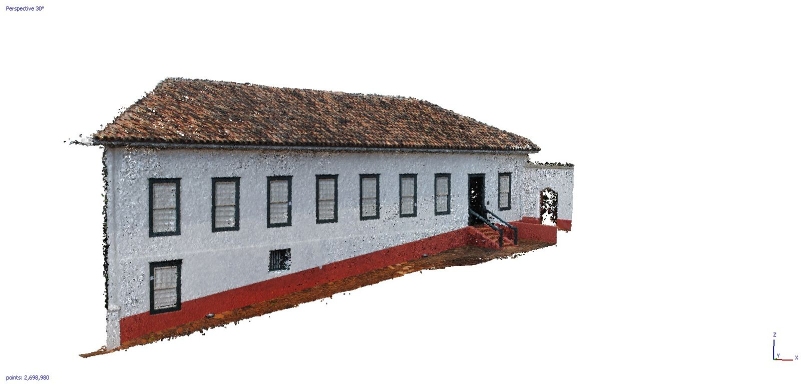

COLMAP — 오픈소스 SfM·MVS의 기준 구현
0. 왜 COLMAP을 따로 보는가
01-tools.md는 COLMAP을 "SfM/MVS의 기준 구현"이라고 한 줄로 소개했다. 그 한 줄을 풀어 쓰는 것이 이 문서의 목적이다.
COLMAP은 현장에서 납품물을 뽑는 상용 도구라기보다 다른 도구와 연구가 기대는 바닥에 가깝다. 3D 가우시안 스플래팅(3DGS)과 NeRF 연구 코드는 대부분 COLMAP 결과를 입력으로 받고, 새 복원 기법이 나오면 COLMAP과 비교한 수치부터 내놓는다. 사진측량 계열 도구를 평가하거나 신경 렌더링 파이프라인을 다루려면 COLMAP이 무엇을 하고 무엇을 하지 않는지부터 알아야 한다.
이 문서도 상위 문서의 범위 렌즈를 따른다. 전 산업을 훑되 건설·AEC 관점에서 경중을 판단했다.
출처 표기는 상위 문서 규칙과 같다. (벤더)는 COLMAP 개발진의 공식 문서·릴리스 노트, (제3자)는 학술 논문과 외부 프로젝트 문서, (추정)은 뒷받침할 출처를 찾지 못한 작성자 판단이다. 오픈소스 프로젝트라 "벤더"가 회사는 아니지만, 자기 도구를 스스로 설명한 자료라는 점은 같다.
1. 정체
| 항목 | 내용 | 출처 |
|---|---|---|
| 한 줄 정의 | 순서가 있든 없든 사진 묶음에서 3차원 모델을 복원하는 범용 SfM·MVS 파이프라인 | COLMAP 문서 (확인 2026-10-07) (벤더) |
| 만든 사람 | Johannes L. Schönberger가 박사과정 중 개발했다. 지도교수는 Jan-Michael Frahm, Marc Pollefeys다 | 같은 문서 (벤더) |
| 현재 관리자 | Schönberger, Paul-Edouard Sarlin, Shaohui Liu | 같은 문서 (벤더) |
| 대표 논문 | Structure-from-Motion Revisited (CVPR 2016), Pixelwise View Selection for Unstructured Multi-View Stereo (ECCV 2016) | CVPR 2016 논문 (확인 2026-10-07) (제3자) |
| 라이선스 | 새 BSD 라이선스. 단, 함께 빌드하는 서드파티 의존성은 라이선스가 따로 있으며 결과물 라이선스에 영향을 줄 수 있다고 명시한다 | License 문서 (확인 2026-10-07) (벤더) |
| 최신 안정판 | 4.2.1 (2026-09-29) | GitHub 릴리스 (확인 2026-10-07) (벤더) |
| 저장소 | 2014-08-16 생성, GitHub 별 약 12,900개 | GitHub API 조회 (확인 2026-10-07) |
| 인터페이스 | GUI, 명령줄(CLI), C++ 라이브러리, Python 바인딩(PyCOLMAP) | 설치 문서 (확인 2026-10-07) (벤더) |
| 배포 형태 | Windows용 CUDA판·비CUDA판 바이너리, macOS(arm64)판, Homebrew, CUDA 포함 Docker 이미지, pip install pycolmap |
같은 문서, 릴리스 자산 목록 (벤더) |
논문 연도와 개발 시점은 다르다. 저장소는 2014년에 만들어졌고 대표 논문은 2016년에 나왔다. 02-history.md에서 짚었듯 이 분야는 논문 연도보다 코드 공개 시점이 실제 확산을 좌우한다.
2. 파이프라인 — 사진에서 점군까지
COLMAP의 작업 흐름은 크게 두 덩어리다. 앞쪽의 SfM이 카메라 위치와 희소 점군을 만들고, 뒤쪽의 MVS가 그 결과를 받아 조밀 점군과 메시를 만든다(튜토리얼, 확인 2026-10-07) (벤더).
사진 ─▶ ① 특징 추출 ─▶ ② 특징 매칭·기하 검증 ─▶ ③ 매퍼(SfM) ─▶ 희소 모델
│
조밀 점군·메시 ◀─ ⑦ 메시화 ◀─ ⑥ 융합 ◀─ ⑤ PatchMatch 스테레오 ◀─ ④ 왜곡 보정
2.1 특징 추출
사진마다 특징점을 찾고 기술자(descriptor)를 계산한다. 기본값은 SIFT다. 4.0부터 ONNX 모델로 학습 기반 특징인 ALIKED를, 4.2부터 LoMa를 쓸 수 있다(4.0.0 릴리스 노트, 4.2.0 릴리스 노트, 확인 2026-10-07) (벤더). CUDA로 빌드하면 화면이 없는 서버에서도 GPU 추출이 돈다. CUDA 없이 OpenGL 대체 경로를 쓰면 화면이 붙어 있어야 해서 그런 서버에서는 CPU 추출을 권한다(튜토리얼) (벤더).
2.2 특징 매칭
어떤 사진 쌍을 비교할지가 처리 시간을 좌우한다. COLMAP은 여섯 가지 방식을 지원한다(튜토리얼, 확인 2026-10-07) (벤더).
| 방식 | 언제 쓰나 |
|---|---|
| Exhaustive | 모든 쌍을 비교한다. 사진 수백 장 규모까지 |
| Sequential | 동영상 프레임처럼 순서가 있는 사진. 어휘 트리 기반 루프 검출을 함께 쓴다 |
| Vocabulary Tree | 사진 수천 장 규모. 시각적으로 비슷한 사진끼리만 비교한다 |
| Spatial | GPS 등 위치 정보가 있을 때 가까운 사진끼리 비교한다 |
| Transitive | 이미 있는 매칭 관계를 따라 대응을 넓힌다 |
| Custom | 사용자가 비교할 쌍이나 미리 계산한 매칭을 넘긴다 |
4.0부터 SIFT와 ALIKED에 LightGlue 매칭을 쓸 수 있다(4.0.0 릴리스 노트) (벤더).
건설 현장 사진으로 옮겨 보면, 360 카메라로 걸으며 찍은 연속 영상은 Sequential, 드론 측량 사진은 GPS가 있으니 Spatial, 여러 날 찍은 사진 수천 장을 섞을 때는 Vocabulary Tree가 자연스럽다 (추정).
2.3 매퍼 — 증분, 전역, 계층
카메라 자세와 3차원 점을 실제로 푸는 단계다. 4.x에서는 세 가지 매퍼를 고를 수 있다.
- 증분(incremental) 매퍼. COLMAP의 원래 방식이다. 처음 두 장으로 시작해 사진을 한 장씩 등록하고 점을 삼각측량하며, 중간중간 번들조정으로 전체를 다듬는다(튜토리얼) (벤더). 견고하지만 사진이 많아지면 느려진다.
- 전역(global) 매퍼. 모든 사진 쌍의 상대 회전·위치를 한꺼번에 풀어 전체 자세를 정한 뒤 번들조정을 한 번 크게 돌린다. 원래 별도 프로젝트였던 GLOMAP(ECCV 2024)이 4.0에서 COLMAP 본체로 들어왔다. GLOMAP 저장소는 이제 폐기(deprecated) 상태이고 기능은 COLMAP의
global_mapper로 쓴다(4.0.0 릴리스 노트, GLOMAP 저장소, 확인 2026-10-07) (벤더). - 계층(hierarchical) 매퍼. 큰 장면을 연결 관계에 따라 여러 덩어리로 나눠 따로 복원한 뒤 합친다. 4.2에서 GUI 선택지와 Python 바인딩이 갖춰졌다(4.2.0 릴리스 노트) (벤더).
GLOMAP 개발진은 전역 방식이 증분 방식보다 보통 10~100배 빠르면서 복원 품질은 같거나 낫다고 밝힌다(GLOMAP 저장소 README, 논문, 확인 2026-10-07) (벤더). 개발진이 직접 내놓은 평가라서 현장 데이터에서 같은 차이가 나는지는 따로 확인해야 한다. 4.0 릴리스 노트도 전역 매퍼가 카메라 내부 변수를 증분 방식과 다르게 추정해서 결과 카메라 파라미터가 달라질 수 있다고 적는다 (벤더).
2.3.1 번들조정 백엔드와 360 카메라
4.1에서 두 가지가 더해졌다(4.1.0 릴리스 노트, 확인 2026-10-07) (벤더).
- Caspar GPU 번들조정. 기본 Ceres 대신 고를 수 있는 GPU 번들조정 백엔드다. 개발진은 중·대규모 문제에서 Ceres CUDA 백엔드보다 "흔히 10~100배 빠르고", 특히 증분 매퍼에서 속도 향상이 크다고 밝힌다.
- 구면(등장방형) 카메라 모델. 360 파노라마 사진을 원본 그대로 복원에 넣을 수 있게 됐다. 다만 릴리스 노트는 이 방식이 파노라마를 여러 장의 원근 사진으로 잘라 넣는 기존 방식(
panorama_sfm예제)보다 대체로 빠르지만 덜 정확하다고 적는다.
360 카메라로 현장을 기록하는 건설 워크플로에서는 두 번째 항목이 특히 중요하다. 속도와 정확도 가운데 무엇을 우선할지 이제 사용자가 고를 수 있다.
2.4 MVS — 조밀 복원
SfM 결과를 받아 네 단계로 조밀 모델을 만든다(튜토리얼, 확인 2026-10-07) (벤더).


- 왜곡 보정(undistortion). 렌즈 왜곡을 걷어 낸 사진을 만든다.
- PatchMatch 스테레오. 사진마다 깊이 맵과 법선 맵을 계산한다.
- 융합(fusion). 깊이·법선 맵을 합쳐 조밀 점군(
fused.ply)을 만든다. - 메시화. 포아송 또는 들로네 방식으로 표면을 만든다. 4.0에서 메시 단순화(QEM)와 텍스처 매핑이 추가됐다(4.0.0 릴리스 노트) (벤더).
이 단계는 GPU가 필수다. FAQ는 CUDA를 지원하지 않는 GPU라면 "조밀 복원을 제외한 모든 기능"을 쓸 수 있다고 적는다(FAQ, 확인 2026-10-07) (벤더). 4.2부터 AMD GPU용 ROCm/HIP 빌드로도 PatchMatch 스테레오가 돌지만, CUDA 빌드와 HIP 빌드는 동시에 켤 수 없다(4.2.0 릴리스 노트) (벤더).
2.5 한 번에 돌리기
단계별 명령도 있지만 처음에는 자동 복원 명령 하나로 끝까지 돌려 볼 수 있다(튜토리얼) (벤더).
colmap automatic_reconstructor \
--workspace_path ./project \
--image_path ./project/images
단계를 나눠 돌리면 feature_extractor → exhaustive_matcher(또는 다른 매칭 방식) → mapper(또는 global_mapper) → image_undistorter → patch_match_stereo → stereo_fusion 순서다. 4.0부터 automatic_reconstructor --mapper GLOBAL로 전역 매퍼를 고를 수 있다(4.0.0 릴리스 노트) (벤더).
3. 산출물과 좌표 규약
COLMAP 결과를 다른 도구로 넘길 때 알아야 할 것들이다(출력 포맷 문서, 확인 2026-10-07) (벤더).
| 파일 | 담는 것 |
|---|---|
database.db |
특징점, 매칭, 기하 검증 결과. SQLite 파일이다 |
cameras.bin / .txt |
카메라 내부 변수(초점거리, 주점, 왜곡 모델) |
images.bin / .txt |
사진별 자세(쿼터니언과 이동 벡터)와 2D 특징점 |
points3D.bin / .txt |
3D 점 좌표, 색, 재투영 오차, 어느 사진에서 보였는지(track) |
rigs / frames |
다중 카메라 리그 구성과 프레임. 최근 버전에서 추가됐다 |
fused.ply |
조밀 점군 |
meshed-poisson.ply, meshed-delaunay.ply |
메시 |
좌표 규약에서 자주 틀리는 지점이 두 군데 있다.
- 저장된 자세는 월드→카메라 변환이다. 카메라 중심 좌표는
-Rᵀ·t로 따로 계산해야 한다. 카메라 좌표계는 X가 오른쪽, Y가 아래, Z가 앞쪽이다 (벤더). OpenGL 계열(Y 위, Z 뒤)을 쓰는 뷰어로 넘길 때는 축을 뒤집어야 한다 (추정). - 축척과 위치가 임의다. 사진만으로는 실제 크기와 지구상 위치를 알 수 없으므로 결과 모델의 단위는 미터가 아니다. 실제 좌표계에 맞추려면 4장의
model_aligner를 써야 한다.
4. 생태계 — 누가 COLMAP 위에 서 있나
4.1 신경 렌더링의 입력 표준
3DGS 원 구현은 직접 찍은 장면을 학습시키려면 COLMAP을 설치해 두고 convert.py를 돌리라고 안내한다. 입력 폴더 구조도 COLMAP의 sparse/0/cameras.bin, images.bin, points3D.bin 그대로이고, 래스터화 때문에 카메라 모델은 SIMPLE_PINHOLE이나 PINHOLE이어야 한다(graphdeco-inria/gaussian-splatting, 확인 2026-10-07) (제3자).
nerfstudio도 사진·영상을 처리하는 ns-process-data에서 COLMAP과 FFmpeg를 쓴다. 다만 Polycam, Record3D처럼 휴대폰 LiDAR나 자체 SLAM으로 자세를 이미 구한 데이터, Metashape·RealityCapture·ODM에서 내보낸 카메라 파라미터는 COLMAP을 건너뛰고 바로 받는다(nerfstudio 문서, 확인 2026-10-07) (제3자).
정리하면 COLMAP 포맷은 신경 렌더링 쪽의 사실상 교환 포맷이 됐다 (추정). 상용 도구가 COLMAP 형식 내보내기를 지원하는지가 3DGS 연계 가능성을 가르는 이유가 여기 있다.
4.2 순전파 복원 모델과의 관계
DUSt3R, MASt3R, VGGT 같은 순전파 모델은 특징 매칭부터 번들조정까지를 신경망 추론 한 번으로 대체하려 한다. 02-history.md에서 인용한 2025년 항공 사진측량 평가는 사진이 10장 미만으로 희소하면 COLMAP보다 완전성이 최대 50% 좋아지지만, 고해상도 대용량 집합에서는 사진이 늘수록 자세 신뢰도가 떨어졌다고 보고했다(arXiv 2507.14798, 확인 2026-09-21) (제3자). 현재로서는 COLMAP의 대체재라기보다 사진이 부족한 구간을 메우는 보완재다.
COLMAP 쪽도 학습 기반 구성 요소를 흡수하고 있다. ALIKED·LoMa 특징, LightGlue 매칭이 ONNX로 들어온 것이 그 흐름이다(2.1, 2.2절).
4.3 다른 오픈소스와의 위치
OpenDroneMap은 COLMAP 대신 OpenSfM으로 자세를 풀고 OpenMVS로 조밀화한다(ODM 저장소, 확인 2026-09-21) (제3자). 정사영상과 DEM까지 내는 항공 측량 패키지라는 점에서 범용 복원 엔진인 COLMAP과 역할이 다르다.
5. 상용 도구와 무엇이 다른가
RealityScan(옛 RealityCapture), Metashape, Pix4D와 견주면 차이는 정확도보다 제품의 경계에서 먼저 드러난다.
| 관점 | COLMAP | 상용 사진측량 도구 |
|---|---|---|
| 비용 | 무료(BSD) | 무료~수천 달러(01-tools.md 가격 정리 참조) (벤더) |
| 내부 통제 | 모든 단계와 파라미터를 열어 둔다. 코드를 직접 고칠 수 있다 | 단계별 옵션은 있지만 내부 알고리즘은 닫혀 있다 |
| 측량 기능 | GPS·기준점으로 상사변환 정렬(model_aligner)까지 |
GCP 관리, 좌표계 라이브러리, 정확도 보고서, 정사영상·DEM 생성 등 측량 납품 기능을 갖춘다 (추정) |
| 결과 성향 | 제3자 비교에서 미세 요철을 잘 살리는 쪽 | Metashape는 내부 필터링으로 매끄러운 결과 |
| 지원 | 커뮤니티(GitHub 이슈) | 벤더 기술 지원 |
결과 성향 행의 근거는 2026년 5월 공개된 노면 거칠기 평가다. 스마트폰 사진으로 COLMAP, Meshroom, Metashape, 3DGS를 비교했더니 COLMAP이 미세 질감에 가장 민감했고, Metashape는 내부 필터링 탓에 가장 매끄러웠으며, 3DGS는 노이즈가 크고 점 밀도가 낮았다(Elmegdar·Xiao, arXiv 2605.29452, 확인 2026-10-07) (제3자). 프리프린트이고 대상이 노면 하나라서 일반화에는 조심해야 한다. "미세 질감에 민감하다"는 말은 노이즈도 덜 걸러진다는 뜻일 수 있다 (추정).
이번 조사에서 COLMAP과 상용 도구의 절대 정확도(mm 단위)를 같은 조건에서 비교한 동료검토 연구는 찾지 못했다. 건설 현장 사진으로 9개 도구를 비교한 연구가 하나 검색됐지만 철회된 논문이라 쓰지 않았다(Kennesaw State 저장소, 확인 2026-10-07).
6. 한계와 주의할 점
GPU 의존. 조밀 복원은 CUDA(또는 4.2 이후 ROCm/HIP) GPU가 있어야 한다. 리눅스 배포판 기본 저장소의 COLMAP 패키지에는 CUDA·HIP 지원이 빠져 있어 직접 빌드해야 한다(설치 문서, 확인 2026-10-07) (벤더). Python에서 GPU를 쓰는 pycolmap-cuda12 휠은 현재 리눅스용만 있다(PyCOLMAP 문서, 확인 2026-10-07) (벤더).
축척과 지리참조. 결과는 임의 축척·임의 좌표계다. model_aligner로 GPS(위경도·고도)나 직교좌표 기준점에 맞출 수 있고, 상사변환을 추정하려면 최소 3장의 사진에 좌표를 줘야 한다. RANSAC으로 이상치를 걸러 낸다(FAQ, 확인 2026-10-07) (벤더). 다만 이것은 7 파라미터 상사변환 정렬이다. 국가 좌표계·수직 기준면 처리와 정확도 검증은 사용자 몫이다 (추정). 04-adjacent-tech.md 9절에서 본 좌표계 사고는 COLMAP을 쓸 때도 그대로 일어난다.
촬영 조건. 문서가 직접 권하는 촬영 원칙은 네 가지다. 질감이 전혀 없는 사진(흰 벽, 빈 책상)을 피한다, 각 물체가 최소 3장에 보이게 한다, 조명을 비슷하게 유지하고 강한 반사를 피한다, 한 자리에서 돌기만 하지 말고 위치를 옮겨 가며 찍는다(튜토리얼, 확인 2026-10-07) (벤더). 건설 실내는 흰 벽·유리·반복 패턴이 많아 이 조건과 정면으로 부딪친다 (추정).
대규모 데이터. 사진이 수천 장을 넘으면 조밀 복원에서 메모리가 먼저 부족해진다. FAQ는 CMVS로 장면을 나누거나, PatchMatch가 참고하는 원본 사진 수를 줄이거나(예: 30 → 10), 캐시 크기를 조정하라고 안내한다(FAQ) (벤더). 4.0의 모델 클러스터링, 4.2의 계층 매퍼도 같은 문제를 겨냥한다.
배포 바이너리 신뢰. Windows 바이너리는 GitHub Actions에서 자동 빌드되며 코드 서명이 없어 첫 실행 때 Windows Defender 경고가 뜰 수 있다고 문서가 직접 밝힌다(설치 문서) (벤더). 보안 정책상 서명 없는 실행 파일을 막는 회사라면 미리 확인해야 한다 (추정).
라이선스. COLMAP 자체는 BSD지만 빌드에 들어가는 의존성 라이선스가 결과물에 영향을 줄 수 있다(License 문서) (벤더). 상용 제품에 넣으려면 실제로 링크하는 의존성(CUDA, Ceres, ONNX 런타임 등)의 라이선스를 따로 검토해야 한다 (추정).
7. 건설·AEC 관점에서의 의미
이 절은 앞의 사실 위에 올린 작성자 판단이다. 전부 (추정)이다.
- 납품 도구보다 검증·연구 도구. 정확도 보고서, GCP 관리, 측량 좌표계 처리가 상용 도구만큼 갖춰져 있지 않아, COLMAP 결과를 그대로 측량 성과로 납품하기는 어렵다. 대신 상용 도구 결과와 비교해 보는 독립 기준선으로, 혹은 새 기법을 시험하는 실험대로 쓸모가 있다.
- 3DGS 연계의 통로. 360 영상이나 현장 사진에서 3DGS를 만들려면 카메라 자세가 필요하고, 그 자세를 표준 형식으로 주고받는 통로가 COLMAP 포맷이다. 자체 SLAM이나 상용 도구로 자세를 구했더라도 COLMAP 형식으로 내보낼 수 있어야 신경 렌더링 생태계와 이어진다.
- 원리 학습의 교재. 코드와 중간 산출물이 모두 열려 있어서 매칭이 어디서 깨지고 번들조정이 왜 발산하는지를 눈으로 확인할 수 있다. 05-learning-roadmap.md가 첫 3개월 과제로 COLMAP을 꼽은 이유다. 실습 과제 1(일부러 실패시키기)도 COLMAP으로 한다.
- 360 영상이 곧바로 들어간다. 4.1의 구면 카메라 모델 덕에 360 현장 영상을 원근 사진으로 자르지 않고 복원에 넣을 수 있다. 릴리스 노트가 직접 밝힌 정확도 손실이 현장 실측 허용오차 안에 드는지는 데이터로 확인해야 한다.
- 전역 매퍼 통합은 처리 시간 문제를 겨냥한다. 현장 기록 사진은 수천 장 단위로 쌓인다. 개발진 주장대로 전역 매퍼가 10~100배 빠르다면 "찍은 날 안에 복원한다"는 운용이 무료 도구로도 현실성이 생긴다. 현장 데이터 검증은 아직 이 문서 범위 밖이다.
8. 이 문서가 답하지 못한 것
- COLMAP과 상용 도구의 절대 정확도를 같은 조건에서 비교한 동료검토 연구를 찾지 못했다.
- 전역 매퍼의 속도·품질 주장은 개발진 자료만 확인했다. 건설 현장 사진으로 직접 측정한 제3자 결과는 없다.
- 4.1 구면 카메라 모델이 원근 분할 방식보다 얼마나 덜 정확한지 정량 수치는 릴리스 노트에 없다.
- Caspar 번들조정의 속도 주장도 개발진 자료만 확인했다.
용어 후보
용어집(00-glossary.md)에 반영한 항목이다.
- COLMAP — 사진 묶음에서 카메라 자세·희소 점군(SfM)과 조밀 점군·메시(MVS)를 복원하는 BSD 라이선스 오픈소스 파이프라인 — https://colmap.github.io/ (확인 2026-10-07)
- 전역 SfM(Global SfM) — 모든 사진 쌍의 상대 자세를 한꺼번에 풀어 전체 카메라 자세를 정한 뒤 번들조정을 하는 방식. 사진을 한 장씩 붙이는 증분 SfM보다 빠르다 — https://arxiv.org/abs/2407.20219 (확인 2026-10-07)